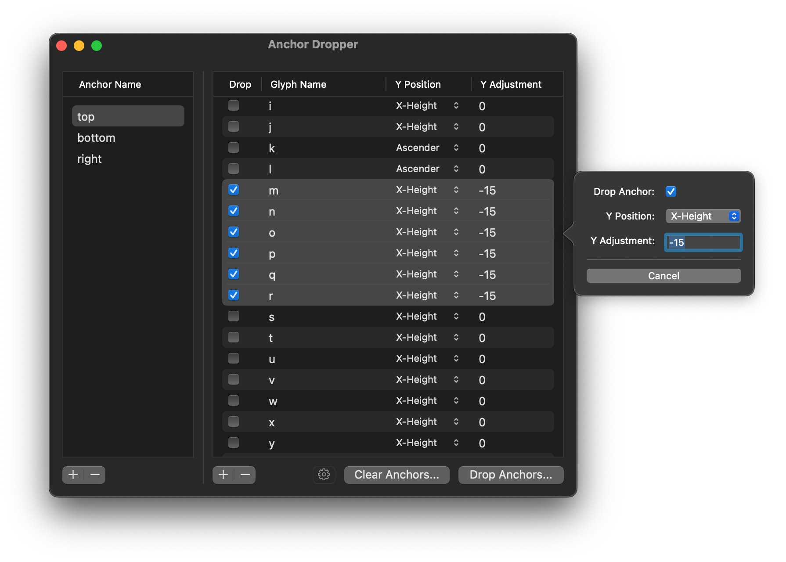

A RoboFont extension that allows you to quickly add anchors to your font.

This is where you define which anchor names you’d like to insert into your font. You made add, remove, or rename rows.
Note: Anchor Dropper will attempt to insert an underscore "_" before your anchor name automatically, when the glyph is an accent.
This is where you define which glyphs will get the anchor that is currently selected in the left table. You made add, remove, or edit rows.
| Column | Description | | --- | --- | | Drop | If this box is checked, the anchor will be added to the glyph here. If this box is unchecked, it will be ignored when you click "Drop Anchors". This is useful if you'd like to have a working list and temporarily want to avoid adding an anchor without destructively deleting the whole row from the table. | | Glyph Name | This is the name of the glyph that will receive the anchor in question. | | Y Position | This is the basis for the y-position of the anchor, written in plain English. | | Y Adjustment | This is the vertical offset, in units, by which the anchor position will be adjusted, starting from the Y Position selected. | | Batch-editing | Selecting multiple rows here and right clicking will bring up a contextual menu which will enable you to quickly edit all rows to your liking. |
This is where you can control the settings for the extension.
If you check this box, anchors of the same name in the same glyph will be overwritten when added to your font.
| Operation | Description |
| --- | --- |
| Save Settings | You may save your anchor/glyph settings to an external, proprietary .anchorDropperSettings preferences file, for use later. This is helpful if you have specific settings for specific type projects. |
| Load Settings | You may load your .anchorDropperSettings file, or you can import a .glyphConstruction file (experimental) and Anchor Dropper will do its best to convert it to an Anchor Dropper setup. |
| Reset Defaults | This resets the anchor/glyph settings in the extension to how it looked when you first installed and opened it. |
This is where you can bulk-remove anchors from your font(s). 
Choose whether you’d like to remove the anchors from the Current Font or All Fonts, and go through the list of anchor names and hit delete. Be advised: the removal will happen instantaneously! Again, Anchor Dropper attempts to remove "_" anchors as well (so removing "top" will also remove "_top").
This button will look at each glyph and make sure you don’t have two anchors of the same name present.
This button will add the anchors to your Current Font.